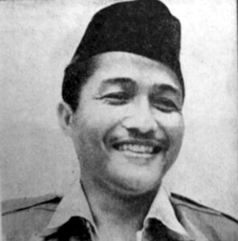
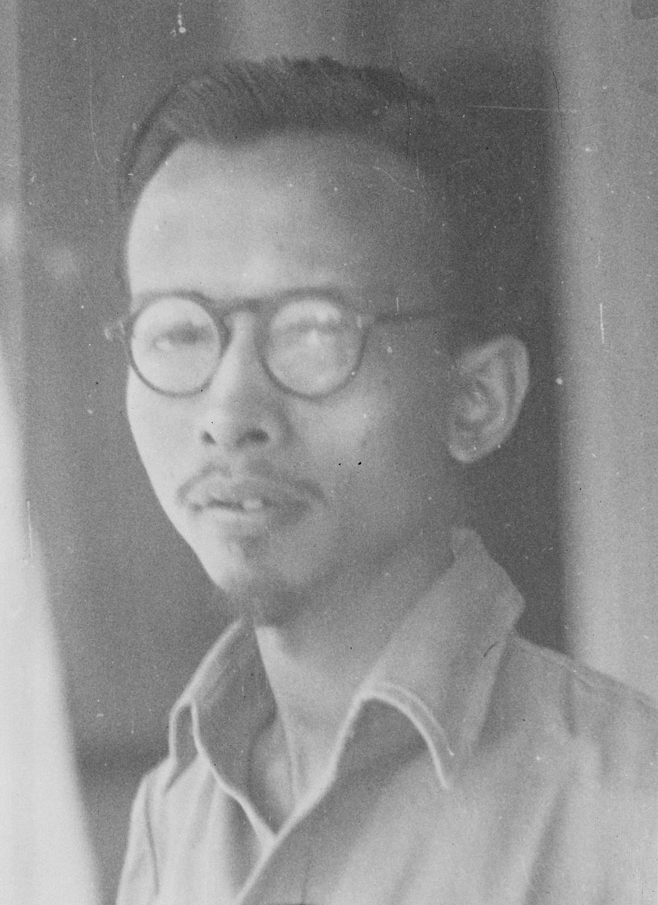
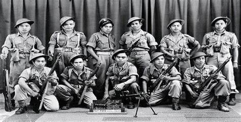

A. Perang Dunia II
Perang Dunia II di kawasan Asia Pasifik berawal dari peristiwa pemboman pangkalan laut Amerika Serikat di Pearl Harbour (Hawaii) oleh pasukan Jepang pada 7 Desember 1941. Dikarenakan kemenangan Jepang tersebut, Jepang merasa wilayah Asia Pasifik tak terhentikan. Hal tersebut membuat Jepang mengambil ahli basil militer Amerika Serikat dan sekutunya di Asia Pasifik, seperti Indonesia, Singapura, Guam, dan masih banyak lagi.
Keunggulan militer Jepang hanya berlangsung selama enam bulan. Jepang terlalu sombong fan menduga kekuatan Amerika Serikat dan sekutunya telah lumpuh. Amerika Serikat dan sekutunya bangkit kembali dan menyusun kekuatan baru di Australia. Jepang berusaha untuk menguasai Australia, tetapi Jepang kalah dikalahkan oleh sekutu pada pertempuran di Laut Karang pada 7-8 Mei 1942.
Setelah peristiwa itu terjadi, medan pertempuran di Asia Pasifik mengalami titik balik. Satu per satu pangkan Jepang direbut Sekutu. Kekalahan perang di Pasifik kemudian menimbulkan krisis kabinet di Jepang. Menyadari hal tersebut, Perdana Menteri Koiso Kuniaki memandang perlu untuk mengikutsertakan kekuatan pribumi dalam setiap peperangan yang melibatkannya.Di Indonesia, Jepang membentuk beberapa kesatuan militer dan semi militer seperti Heiho, Peta, dan masih banyak lagi.
Untuk memikat hati rakyat Indonesia, pada 7 September 1944 Perdana Menteri Koiso mengeluarkan janji kemerdekaan. Pada tanggal 29 April 1945, Jepang menyetujui terbentuknya Dokuritsu Junbi Cosakai (BPUPKI atau Badan Penyelidik Usaha-usaha Persiapan Kemerdekaan Indonesia) sebagai awal realisasi janji kemerdekaan. BPUPKI diketuai oleh dr. Radjiman Wediodiningrat dengan tugas utama yakni mempelajari dan menyusun rencana pembangunan pemerintahan Indonesia.
Jepang mengadakan rapat di SIngapura pada akhir bulan Juli 1945. Dalam rapat itu diputuskan Jepang akan memberikan kemerdekaan Indonesia secara bertahap, yaitu Jawa pada 7 September 1945 dan pulau lain sesudahnya.
Pada tanggal 7 Agustus 1945 panglima tentara Jepang di Asia Tenggara, Jenderal Terauchi menyetujui pembentukan Dokuritsu Junbi Inkai (PPKI atau Panitia Persiapan Kemerdekaan Indonesia). Badan ini dibentuk sebagai pengganti BPUPKI yang dianggap telah selesai menjalankan tugasnya. Badan ini bertugas menyiapkan sesuatu yang berkaitan dengan pemindahan kekuasaan dari pemerintah Jepang kepada bangsa Indonesia.
Pada tanggal 9 Agustus 1945, Jenderal Terauchi memanggil tiga tokoh PPKI ke markas besarnya di Vietnam. Ketiga tokoh tersebut adalah Ir. Soekarno, Drs. Mohammad Hatta, dan dr. Radjiman Wediodiningrat. Kehadiran mereka di Dalat (Vietnam Selatan) berkenaan dengan pelantikan PPKI. Tiga hari setelah pertemuan tersebut, Jenderal Terauchi memberitakan bahwa Jepang akan memberikan kemerdekaan kepada bangsa Indonesia pada 24 Agustus 1945. Para tokoh uang dikirim ke Vietnam pulang ke tanah air pada tanggal 14 Agustus 1945.
Pada 6 dan 9 Agustus 1945, pesawat pembom B29 Amerika Serikat telah menjatuhkan bom atom di Kota Hiroshima dan Nagasaki. Karena hal tersebut, ribuan warga jepang yang menetap di kedua kota tersebut tewas. Dengan dijatuhkannya bom di kota Hiroshima dan Nagasaki, Jepang mengajukan permintaan damai pada 10 Agustus 1945. Namun permintaan itu ditolak oleh Sekutu. Sekutu hanya mau menerima penyerahan tanpa syarat dari Jepang.
Dampak Pemboman di Hiroshima
Pada 15 Agustus 1945, Kaisar Jepang, Hirohito memerintahkan penghentian permusuhan terhadap Sekutu.
Peristiwa tersebut disiarkan radio Jepang dengan bahasa Jepang. Siaran itu tertangkap di Indonesia, tetapi orang yang mengerti bahasa Indonesia masih terbatas sehingga kekalah tersebut berhasil ditutup-tutupi oleh Jepang. Tetapi, penyiaran penyerahan Jepang itu didengar oleh Sutan Syahrir. Karena itu, begitu Soekarno dan Hatta sudah tiba di tanah, Sutan Syahrir mendesak mereka untuk segera memproklamasikan kemerdekaan Indonesia. Soekarno-Hatta belum dapat menanggapi desakan itu karena kekalahan Jepang tersebut masih simpang siur, dan khawatir dengan kekuatan Jepang di Indonesia yang masih kuat dan utuh.
Setelah Jepang menyerah tanpa syarat kepada Sekutu, Indonesia berada dalam keadaan kosong kekuasaan. Artinya, saat itu tidak ada satu pun pemerintahan yang berkuasa di Indonesia. Dalam situasi seperti itu, para tokoh pejuang kemudian melakukan berbagai kegiatan untuk mewujudkan kemerdekaan Indonesia. Kegiatan yang dilakukan pada saat itu adalah menentukan saat yang tepat untuk memproklamasikan kemerdekaan, menentukan tokoh yang akan memproklamasikan kemerdekaan, menyusun teks proklamasi, menentukan bentuk pelaksanaan proklamasi yang tepat, dan mempersiapkan perlengkapan negara yang mungkin diperlukan.
B. Peristiwa Rengasdengklok
Dengan peristiwa penyerahan Jepang kepada Sekutu, para pemuda melakukan pertemuan di Gedung Lembaga Bakteriologi yang dipimpin oleh Chaerul Saleh. Pertemuan tersebut dilakukan pada tanggal 15 Agustus 1945 dan menghasilkan keputusan berikut ini:
- Mendesak Soekarno Hatta untuk memproklamasikan kemerdekaan.
- Menunjuk beberapa pemuda untuk menemui Soekarno-Hatta dan menyampaikan keputusan rapat, tetapi kemerdekaan tidak diproklamasikan melalui PPKI.
- Membagi tugas kepada para kaum muda di seluruh Jakarta untuk merebut kekuasaan dari tangan Jepang.
Sesuai keputusan rapat, para pemuda yang ditugaskan untuk menemui Soekarno pergi ke kediamannya. Mereka menyampaikan keputusan rapat dan mengatakan bahwa proklamasi harus dilakukan oleh Soekarno pada 16 Agustus 1945 dan jika ia tidak melaksanakan hal tersebut, maka akan terjadi pertumpahan darah. Mendengar perkataan yang seperti ancaman tersebut, Soekarno marah dan tidak ingin untuk melepaskan tanggung jawabnya sebagai Ketua PPKI dan ingin membahas hal tersebut bersama anggota PPKI keesokan harinya.
Para pemuda tidak putus asa atas penolakan tersebut. Mereka melaksanakan pertemuan kembali dan mendapat keputusan bahwa mereka akan membawa Soekarno-Hatta ke Rengasdengklok dengan tujuan untuk menjauhkan kedua tokoh dari tekanan dan pengaruh Jepang.
Para pemuda tidak putus asa atas penolakan tersebut. Mereka melaksanakan pertemuan kembali dan mendapat keputusan bahwa mereka akan membawa Soekarno-Hatta ke Rengasdengklok dengan tujuan untuk menjauhkan kedua tokoh dari tekanan dan pengaruh Jepang.
Sesuai rencana, pada 16 Agustus 1945, Soekarno dan Hatta dibawa para pemuda ke Rengasdengklok. Para pemuda menyampaikan alasan bahwa semangat rakyat akan kemerdekaan dapat mengancam Soekarno-Hatta jika mereka masih berada di Jakarta. Ketua tokoh tersebut menerima alasan dan setuju untuk dibawa ke Rengasdengklok. Soekarno-Hatta pun dibawa dan dikawal menggunakan mobil. Agar tidak dicurigai, mereka mengenakan seragam Peta dan mengendarai menuju rumah Jiu Kie Song.

Rumah Jiu Kie Song
Para pemuda menekan mereka berdua supaya melaksanakan proklamasi yang tidak dikaitkan dengan Jepang, tetapi kedua tokoh tersebut selalu menolak. Karena hal tersebut Syodannco Singgih (Pemimpin pemuda yang mengantar Soekarno-Hatta ke Rengasdengklok) melakukan pembicaraan dengan Soekarno. Setelah hal tersebut, Soekarno akhirnya menyetujui proklamasi yang tidak dikaitkan dengan pihak Jepang, dengan kondisi sudah berada kembali di Jakarta.
Pada saat yang sama, di Jakarta dilangsungkan pertemuan antara golongan tua yang diwakili Mr. AHmad Soebardjo dan golongan muda yang diwakili Wikana. Hasil dari pertemuan tersebut adalah disepakati bahwa proklamasi kemerdekaan Indonesia harus dilakukan di Jakarta. Dengan keputusan tersebut. Ahmad Soebardjo menjemput Soekarno-Hatta di Rengasdengklok.
Dalam pertemuan dengan para pemuda di Rengasdengklok, Ahmad Soebardjo memberi jaminan bahwa kemerdekaan akan dilaksanakan pada 17 Agustus 1945.
Golongan tua lebih cenderung memiliki sikap hati-hati dalam mencermati kekosongan Indonesia dengan ketakutan Jepang masih bisa melawan dikarenakan di Indonesia, Jepang masih kuat dan utuh. Golongan tua juga lebih memilih untuk merdeka dengan adanya PPKI. Sedangkan, golongan muda lebih bersifat agresif dan mendorong kemerdekaan sebelum Sekutu kembali. Golongan muda juga tidak menyukai kemerdekaan melalui PPKI dikarenakan dianggap PPKI sebagai keterlibatan Jepang di kemerdekaan Indonesia.
| Golongan Tua | Golongan Muda | ||
|---|---|---|---|
| Nama | Foto | Nama | Foto |
| Ir. Soekarno |  |
Sukarni |  |
| Drs. Moh. Hatta |  |
Adam Malik |  |
| Mr. Ahmad Soebardjo |  |
dr. Muwardi |  |
| Mr. Moh. Yamin |  |
Wikana |  |
| Mr. Iwa Kusumasumantri |  |
Chaerul Saleh |  |
| B.M. Diah |  |
||
C. Perumusan Teks Proklamasi Kemerdekaan Indonesia
Pada tanggal 16 Agustus 1945, rombongan Soekarno-Hatta kembali di Jakarta dan akan melakukan pertemuan untuk pembuatan Teks Proklamasi. Pertemuan tersebut semulanya akan dilakukan pada sebuah hotel, tetapi hotel tersebut tidak menerima kegiatan apapun pada malam hari (22.30). Dalam keadaan demikian, Ahmad Soebardjo berhasil meminjam tempat seorang angkatan laut Jepang yang bersimpati kepada bangsa Indonesia, yaitu Laksama Maeda. Di rumah Maeda inilah dilangsungkan pertemuan anggota PPKI dan para pemuda untuk membahas segala persiapan proklamasi kemerdekaan.
Tokoh-tokoh yang terlibat dalam perumusan naskah Proklamasi Kemerdekaan Indonesia adalah Sukarni, Sudiro, dan B.M. Diah, Ir. Soekarno, Moh. Hatta, dan Ahmad Soebardjo. Kalimat pertama rumusan itu merupakan buah pikir Soekarno dan AHmad Soebardjo yang diambil dari teks Pembukaan Undang-Undang Dasar 1945, dan kalimat terakhir merupakan sumbangan pikiran Moh. Hatta, Hasil pembicaraan mereka bertiga dituangkan pada sebuah kertas dengan tulisan tangan Soekarno.

Teks Proklamasi yang ditulis oleh Soekarno
Soekarno membacakan rumusan naskah proklamasi kemerdekaan yang langsung disetujui oleh semua hadirin. Selanjutnya yang harus dilakukan adalah persoalan tentang siapa yang harus menandatangani teks tersebut. Soekarno-Hatta menyarankan agar semua orang yang hadir menandatangani teks tersebut. Tetapi, usul tersebut tidak disetujui oleh sebagian besar hadirin. Sukarni mengusulkan agar yang menandatangani naskah proklamasi cukup Soekarno dan Hatta saja. Para tokoh yang hadir akhirnya menyetujui usulan Sukarni.
Dengan disetujuinya usul Sukari, Soekarno meminta kepada Sayuti Melik untuk mengetik naskah itu berdasarkan tulisan tangannya. Hasil ketikan Sayuti Melik pun ditandatangani oleh Soekarno-Hatta.

Naskah Proklamasi Kemerdekaan Indonesia yang diketik oleh Sayuti Melik
Setelah naskah proklamasi ditandatangani Soekarno-Hatta, ada persoalan satu lagi mengenai tempat dibacakan naskah tersebut. Sukarni mengusulkan untuk melakukannya di Lapangan Ikada (Sekarang Lapangan Monas) agar banyak warga Jakarta bisa mendengar pembacaan naskah proklamasi tersebut.
D. Peristiwa Proklamasi Kemerdekaan Indonesia
Para tokoh kemerdekaan berhasil membuat sebuah naskah pada tanggal 17 Agustus 1945 sekitar pukul 04.30 WIB. Kelompok golongan muda berusaha untuk mencari dan mengatur pelaksanaan penyiaran berita proklamasi kemerdekaan. Dengan situasi seperti ini, mereka menyebarkan pamflet, menggunakan pengeras suara, agar masyarakat berkumpul pada Jalan Pengangasan Timur No. 56. Banyak warga sudah mendengar bahwa Proklamasi akan diadakan pada Lapangan Ikada sehingga para warga berbondong-bondong dan mengerumuni lapangan tersebut. Jepang sudah mencium isu akan adanya kegiatan pada lapangan tersebut sehingga, sejak pagi, Lapangan Ikada sudah dijaga ketat oleh Jepang dengan senjata lengkap.
Sudiro selaku pimpinan Barisan Pelopor hadir pula di Lapangan Ikada. Ketika ia melihat pasukan Jepang yang bersenjata di sana, ia segera kembali dan melapor kepada dr. Muwardi (Kepala Keamanan Soekarno). dr. Muwardi mengatakan bahwa Proklamasi tidak dilakukan di Lapangan Ikada, sehinga Sudiro memberitahukan hal tersebut kepada kelompok-kelompok pemuda.
Di kediaman Ir. Soekarno, sudah ada banyak pemuda berdatangan. Latief dan beberapa prajurit ikut berjaga di sekitar rumah Ir. Soekarno. Hampir semua tokoh pejuang hadir di Pegangsaan Timur.
Saat Hatta tiba di rumah Ir. Soekarno, mereka segera menuju tempat yang disediakan. Upacara proklamasi kemerdekaan berlangsung tanpa protokol. Dalam suasana hening, Soekarno membacakan pidato sebelum teks proklamasi kemerdekaan. Lalu dilanjutkan dengan pembacaan teks proklamasi kemerdekaan Indonesia.

Pembacaan Proklamasi Kemerdekaan Indonesia
Acara dilanjutkan dengan pengibaran bendera Indonesia. Hadirin mengiringi penaikan bendera dengan menyanyikan lagu Indonesia Raya dan bendera Merah Putih itu dijahit oleh Fatmawati.
E. Penyebaran Berita Proklamasi Kemerdekaan Indonesia
Sebelum naskah proklamasi dikumandangkan, sejumlah pemuda sibuk dengan kegiatan menyebarkan berita proklamasi. Mereka membagi pekerjaan secara berkelompok. Penyebaran berita proklamasi dilakukan secara lisan dan tulisan:
- Stensilan:
- Kelompok pemuda di markas Menteng 31 ikut menyebarkan berita dan Stensilan Proklamasi ke seluruh penjuru kota. Meskipun stensilan naskah telah digandakan ribuan, ternyata tidak cukup permintaan naskah yang banyak. Oleh karena itu, Supardo yang bekerja di Balai Pustaka dan B.M. Diah yang menggunakan percetakan Asia Raya diminta untuk mencetak puluhan ribu stensilan.
- Dalam kegiatan tersebut, terdapat banyak tenaga sukarela yang siap dikirimkan ke pulau-pulau selain Jawa. Banyak rombongan yang sukarela menyeberangi pulau-pulau untuk menyebarkan berita.
- Siaran Radio:
- Penyaluran berita juga dilakukan melalui siaran radio. Syahrudin, seorang wartawan kantor berita Domei mendapat salinan naskah Proklamasi. Ia menyampaikan hal tersebut kepada Kepala Bagian Radio Domei dan ia memerintahkan F. Wuz, petugas telekomunikasi untuk menyiarkan berita proklamasi tiga kali. Namun, baru dua kali disiarkan, tentara Jepang memerintahkan untuk menghentikan berita tersebut. Dengan itu, kantor berita Domei disegel dan pegawainya dilarang masuk.
- Para pegawai Domei kemudian mendirikan pemancar baru di Menteng 31. Dari pemancar radio gelap itulah berita proklamasi disiarkan.
- Selain itu, Jusuf Ronodipuro dari Radio Hosokioku berhasil mengudarakan teks proklamasi sehingga sampai di seluruh dunia.
- Mulai tahun 1946, sebuah siaran bahasa Inggris, The Voice of Free Indonesia berhasil disiarkan yang dibawakan oleh Molly Warner. Molly Warner ada seorang Australia yang menjalin perkawinan dengan pejuang buangan indonesia dan ia bersimpati pada Indonesia dan ikut membantu menyebarkan berita proklamasi.
Dengan perjuangan rakyat Indonesia untuk menyebarkan berita tersebut, berita Proklamasi Kemerdekaan Indonesia terdengar di seluruh dunia. Mesir adalah negara yang pertama kali mengakui kemerdekaan Indonesia. Karena hal tersebut, rakyat Indonesia semakin gembira dan antusias.
F. Terbentuknya Negara dan Pemerintah Republik Indonesia
Setelah Proklamasi Kemerdekaan Indonesia, para tokoh sibuk dengan kegiatan membentuk negara, pemerintahan dan berbagai kelengkapannya. Sebelumnya, bentuk negara sudah banyak dibicarakan dalam sidang-sidang BPUPKI dan dilanjutkan pada sidang-sidang PPKI. Secara de facto, suatu negara bisa dikatakan sebagai negara jika memiliki 3 syarat, memiliki wilayah. Rakyat, dan pemerintah. Sedangkan, Indonesia masih belum memiliki pemerintahan sehingga ketiga sidang PPKI yang dilakukan untuk membentuk pemerintahan.
Pada 18 Agustus 1945, hasil sidang PPKI adalah tiga keputusan yaitu:
- Mengesahkan dan menetapkan Undang-Undang Dasar Republik Indonesia (UUD 1945)
- Memilih dan menetapkan Ir. Soekarno sebagai presiden dan Drs. Mohammad Hatta sebagai Wakil Presiden.
- Sebelum terbentuknya Majelis Permusyawaratan Rakyat (MPR), pekerjaan Presiden sementari dibantu oleh sebuah Komite Nasional.
Pada 19 Agustus 1945, PPKI melaksanakan sidang kedua dan menghasilkan dua keputusan, yaitu:
- Menetapkan 12 kementrian.
- Membagi daerah Republik Indonesia dalam delapan Provinsi.
Pada 22 Agustus 1945, PPKI melaksanakan sidang ketiga dan menghasilkan keputusan untuk membentuk Komite Nasional Indonesia Pusat dan Daerah, Partai Nasional Indonesia, dan Badan Keamanan Rakyat.

Badan Keamanan Rakyat
G. Peristiwa Heroik Sekitar Proklamasi Kemerdekaan Indonesia
1) Pertempuran Heroik di Surabaya (10 November 1945)
Kedatangan Sekutu yang dipimpin oleh Brigjen Aubertin Walter Sothern Mallaby awalnya disambut baik oleh rakyat Jawa Timur. Padar sekutu datang untuk melucuti tentara Jepang dan menyelamatkan tawanan Sekutu di Surabaya. Hubungan baik tersebut berlanjut pada sebuah pertemuan yang menghasilkan kesepakatan untuk menjamin keamanan dan menghasilkan kententeraman.
Pemerintah RI memperbolehkan Inggris untuk memasuki kota Surabaya. Namun, pihak Inggris mengingkari perjanjian tersebut. Mereka menyerbu penjara Kalisosok untuk membebaskan tawanan Belanda dan juga menduduki banyak objek vital.
Menanggapi hal tersebut, rakyat Surabaya menyerang semua pos Sekutu pada 28 Oktober. meskipun upaya untuk mencapai perdamaian, pertempuran masih berkecamuk gencatan senjata. Hal yang memanaskan konflik itu adalah, ketika pemuda meminta Mallaby untuk menyerah tetapi ia tidak mau sehingga para pemuda menembak Brigjen Mallaby sampai mati. Atas terbunuhnya Brigjen Mallaby, sekutu menuduh aksi pembunuhan dilakukan rakyat Surabaya dan memperingatkan rakyat agar menyerah.
Pada tanggal 7 November 1945, pemimpin baru sekutu menulis surat untuk gubernur bahwa gubernur tidak bisa lagi menguasai keadaan seluruh kota dikarenakan sekutu merasa Rakyat Surabaya menghalang-halangi tugas Sekutu. Terdapat banyak kejadian yang menguntungkan pihak sekutu daripada pihak Surabaya seperti harus lapor jika memiliki senjata dan tidak boleh dipegang dan hal-hal lain.
Tetapi rakyat Surabaya tidak menghiraukan hal tersebut tetapi malah lebih semangat untuk melwaan sekutu. Hal ini dibantu dengan semangat yang didapatkan oleh Bung Tomo dan juga Sungkono. Pertempuran Surabaya pecah pada 10 November 1945. Dikarenakan banyaknya korban dan menunjukkan semangat kemerdekaan rakyat Indonesia, 10 November diperingati sebagai Hari Pahlawan.
2) Pertempuran Bojong Kokosan (9 Desember 1945)
Video Pertempuran Bojong Kokosan
3) Pertempuran Medan Area (10 Desember 1945)
Video pertempuran Medan Area
4) Pertempuran Ambarawa (12-15 Desember 1945)
Video pertempuran Ambarawa
5) Peristiwa Merah Putih di Manado (14 Februari 1946)
Berita proklamasi Indonesia bisa sampai di Sulawesi, sehingga para pemuda Manado berusaha mengambil alih kekuasaan dari Jepang. Jepang lalu menyerahkan kekuasaannya dalam upacara di Tondano.
Kemudian, Sekutu (Australia) dengan NICA tiba di Manado. Mereka melarang pengibaran bendera merah putih dan mempersenjatai KNIL. Karena itu, para pemuda membentuk organisasi perjuangan, yaitu Barisan Pemuda Nasional Indonesia (BPNI).
Tentara Australia pergi dari Sulawesi Utara pada akhir tahun 1945 dan NICA yang berkuasa. NICA lalu menangkap para pemimpin rakyat. Pemimpin rakyat yang masih bebas lalu mengadakan rapat rahasia dengan KNIL pro-RI untuk merebut kekuasaan Belanda. Namun, rapat itu diketahui NICA sehingga seluruh senjata disita dan beberapa ditangkap.
Pada 14 Februari 1946 delapan anggota KNIL pro-RI berhasil menyerang para pengawal NICA di tangsi Teling. Mereka lalu membebaskan para tawanan dan para perwira Belanda serta pasukannya ditangkap.
Setelah itu, para pejuang membentuk pemerintahan RI di Sulawesi Utara dengan B. W. Lapisan sebagai residennya. Dibentuk juga Tentara Republik Indonesia yang berisi kompi KNIL dengan komandan militernya Ch. Ch. Taulu.

Pertempuran merah putih
6) Bandung Lautan Api (23 Maret 1946)
Video Bandung Lautan Api
H. Proses Pengakuan Kedaulatan Indonesia
1) Kedatangan Sekutu dan NICA di Indonesia
Setelah mengalahkan Jepang, Komando Sekutu Asia Tenggara mengutus tujuh perwira Inggris yang dipimpin Mayor A.G. Greenhalgh datang ke Indonesia. Mereka sampai pada 8 September 1945.
Pada 16 September 1945, rombongan Sekutu yang dipimpin Laksamana Muda W.R. Patterson bersama perwakilan kepala NICA mendarat di Tanjung Priok (Jakarta).
AFNEI mendarat di Jakarta pada 26 September 1945. Kedatangan itu semula disambut baik. Akan tetapi, bangsa Indonesia mulai curiga saat mereka datang dengan NICA. NICA berniat menegakkan kembali kekuasaannya. NICA dan KNIL yang didukung Inggris melancarkan provokasi dan melakukan teror pada para pemimpin nasional. Akhirnya, pecah berbagai pertempuran di daerah.
2) Agresi Militer Belanda ke Republik Indonesia
A. Agresi militer I Belanda (21 Juli 1947- 4 Agustus 1947)
Pada 21 Juli 1947, Belanda menyerang secara serentak terhadap daerah-daerah republik yang diarahkan ke Pulau Jawa dan Sumatra.
Serangan militer itu dikenal sebagai Agresi Militer Pertama Belanda. Sedangkan, pihak Belanda menyebut aksi agresi militernya yang dipimpin mantan perwira KNIL, Letnan Jenderal Simon M. Spoor sebagai "Operasi Produk" karena serangan itu ditujukan pada sasaran yang bersifat ekonomis. Belanda berhasil menguasai Jakarta dan kota-kota penting di Jawa Barat, Jawa Tengah, Jawa Timur, dan Sumatra. Belanda memiliki keunggulan dalam bidang senjata dan lebih bisa bekerja sama dibanding Indonesia. Selain itu, pasukan republik terpencar-pencar dan banyak kehilangan koordinasi dengan kesatuan atau pimpinannya. Dalam perkembangan selanjutnya, tentara republik dapat melakukan konsolidasi dan berusaha membangun daerah-daerah pertahanan bar. Sistem gerilya diterapkan dan berjalan efektif. Agresi militer Belanda pertama mengundang reaksi dunia. India dan Australia mengusulkan agar masalah Indonesia dibicarakan dalam Dewan Keamanan PBB. Usul ini diterima baik oleh PBB sehingga pada 1 Agustus 1947, Dewan Keamanan PBB memerintahkan penghentian tembak-menembak. Kemudian, Indonesia dan Belanda mengumumkan gencatan senjata. Sejak 4 Agustus 1947 berakhirlah agresi militer Belanda yang pertama.

Agresi Militer Belanda I
B. Agresi Militer Belanda II (19 Desember 1948-28 Januari 1949)
Tanggal 19 Desember 1948, Belanda di bawah koordinasi Dr. Bell melancarkan agresi militer kedua. Belanda terlebih dahulu menyerang pangkalan udara Maguwo. Setelah Maguwo dikuasai, sasaran beralih ke ibukota RI di Yogyakarta. Dalam serangan itu Belanda berhasil menawan presiden, wakil presiden, dan beberapa pejabat tinggi lainnya. Presiden Soekarno diterbangkan ke Prapat kemudian ke Bangka. Wakil Presiden Hatta ditawan di Bangka. Setelah itu, Belanda menyiarkan berita ke seluruh dunia menyatakan bahwa RI sudah tidak ada dan perlawanan TNI tak berarti. Walaupun demikian, sebelum para pemimpin republik ditawan, Presiden Soekarno sempat memimpin sidang kabinet secara singkat. Hasil sidang kabinet tersebut sebagai berikut:
1. Pemerintah republik Indonesia memberikan mandat melalui radiogram kepada Menteri Kemakmuran Mr. Syafruddin Prawiranegara untuk membentuk Pemerintahan Darurat Republik Indonesia (PDRI) di Bukittinggi, Sumatra.
2. Presiden dan wakil presiden tetap tinggal di dalam kota agar tetap dekat dengan KIN dengan risiko ditawan Belanda.
3. Pimpinan TNI akan menyingkir ke luar kota untuk melaksanakan perang gerilya dengan membentuk wilayah komando di Jawa dan Sumatra. Agresi militer Belanda kedua ini mengundang reaksi dan kecaman dari dunia internasional. Belanda dinilai selalu mengganggu ketertiban dan perdamaian dunia dan tidak menghormati setiap persetujuan yang dibuatnya.

Agresi Militer Belanda II
Dalam pertemuan tanggal 28 Januari 1949, Dewan Keamanan PBB mengeluarkan resolusi yang memerintahkan penghentian semua operasi militer Belanda dan penghentian semua aktivitas gerilya tentara republik.
3) Perang Gerilya Melawan Agresi Militer Belanda Setelah menyadari pertempuran dengan bangsa Indonesia tidak menghasilkan apa-apa. Sekutu mengajak Belanda mengakhiri perang dan mengadakan perundingan gencatan senjata dengan Indonesia. Akhirnya, dilakukanlah perundingan di Linggarjati pada 10-15 November 1946. Penandatanganan persetujuan Linggarjati berlangsung pada 25 Maret 1947. Akan tetapi, para pemimpin republik curiga dan meyakini, Belanda tidak lama lagi akan melancarkan serangan berikutnya. Karena itulah, Panglima Soedirman dan Jenderal Oerip Soemohardjo menginstruksi tentara Republik untuk mempertahankan kubu-kubu di sekitar kantong-kantong yang diduduki Belanda. Pada 21 Juli 1947, Belanda melancarkan agresi militer pertama ke daerah-daerah Republik di Sumatra dan Jawa. Serangan Belanda membuat pasukan Republik menjadi terpencar-pencar tanpa koordinasi. Ditambah lagi, persenjataan tentara republik kurang unggul daripada persenjataan tempur Belanda. Dalam kondisi seperti itu, para pemimpin tentara Republik memilih taktik gerilya demi memenangkan peperangan.
Dalam akhir tahun 1947, tentara republik yang bergerilya mulai terorganisir dan memiliki komando gerilya yang dinamis. Akibatnya, Belanda menjadi kesulitan untuk menggempur tentara republik. Dengan demikian, Belanda hanya menguasai kota-kota besar dan jalan-jalan Raya.
Video perang Gerilya
4) Serangan Umum 1 Maret 1949
Video Serangan Umum 1 Maret 1949
5) Diplomasi Indonesia menghadapi Sekutu dan NICA
1. Perjanjian Linggarjati (25 Maret 1947)
Video Serangan Umum 1 Maret 1949
2. Perjanjian Renville (17 Januari 1948)
Atas usul KTN (Komisi Tiga Negara) disepakati perundingan RI-Belanda dilakukan di sebuah kapal USS Renville. Perundingan dimulai pada 8 Desember 1947. Delegasi RI dipimpin Mr. Amir Syarifuddin dan Belanda dipimpin R. Abdulkadir Wijoyoatmojo (orang Indonesia yang memihak Belanda).
Perjanjian Renville ditandatangani pada 17 Januari 1948. Isi pokok persetujuan Renville adalah:
1.Disetujui pelaksanaan gencatan senjata
2.Disetujui garis demarkasi yang memisahkan wilayah RI dan daerah kedudukan Belanda
3.TNI ditarik mundur dari daerah kantongnya di wilayah pendudukan Jawa Barat dan Jawa Timur ke daerah RI di Yogyakarta.
Namun, persetujuan Renville telah merugikan bangsa Indonesia Wilayah RI semakin sempit dan adanya blokade ekonomi Belanda. Karena itu, para tokoh RI bereaksi keras dan Amir Syarifuddin akhirnya mengundurkan diri dari kedudukannya sebagai perdana menteri.

Perjanjian Renville
3. Perundingan Roem-Royen (7 Mei 1949)
Video Serangan Umum 1 Maret 1949
4. Konferensi Inter-Indonesia (19 Juli 1949)
Para pemimpin RI melakukan pendekatan politik dengan BFO untuk memadukan kekuatan nasional dalam menghadapi Belanda. Pada tanggal 19-22 Juli 1949 di Yogyakarta dan 31 Juli - 2 Agustus 1949 di Jakarta dilangsungkan Konferensi Inter-Indonesia.
Konferensi menghasilkan keputusan:
1. BFO mengakui bahwa NIS akan menerima kedaulatan dari Belanda dan RI.
2. Menyetujui pembentukan Komite Persiapan Nasional yang terdiri dari RI dan BFO dengan tujuan mengoordinasikan seluruh persiapan dan kegiatan selama dan sesudah KMB serta sebagai lembaga pusat yang menjamin hubungan RI dengan BFO.
3. Negara bagian tidak akan memiliki tentara yang terpisah-pisah.
4. BFO mendukung tuntutan RI supaya penyerahan kedaulatan menjadi nyata, tanpa syarat, serta tanpa ikatan politik dan ekonomi.
5. Konferensi Meja Bundar
Video Konferensi Meja Bundar

Sebelum ada kesepakatan dan hasil dari KMB, terdapat dua masalah pokok yang sulit dipecahkan:
1.Masalah Uni Indonesia Belanda, Indonesia ingin uni yang bersifat kerja sama bebas, sedangkan Belanda menghendaki uni bersifat permanen.
2.Soal Utang Hindia Belanda
Indonesia mengakui utang Hindia Belanda sampai menyerahnya Belanda kepada Jepang. Sementara, Belanda menghendaki Indonesia mengambil semua utangnya sampai saat berlangsungnya konferensi.
6) Diplomasi Indonesia Menarik Dukungan Internasional
Indonesia juga berjuang untuk menarik dukungan internasional melalui PBB. Perjuangan ini dilakukan pemimpin Indonesia dalam sidang-sidang PBB dan menarik dukungan negara lain untuk memperjuangkan Indonesia dalam sidang PBB.
PBB cukup menghormati tugas menyelesaikan konflik di Indonesia. Seperti mengirimkan KTN dan UNCI.
1. Peranan PBB melalui KTN
Agresi militer pertama Belanda mengundang reaksi keras dari dunia internasional. Wakil-wakil dari India dan Australia di PBB mengajukan resolusi untuk persoalan Indonesia dibahas dalam pembicaraan di PBB.
Pada 1 Agustus 1947, Dewan Keamanan PBB memerintahkan kepada Indonesia dan Belanda untuk menghentikan tembak menembak dan gencatan senjata. Gencatan senjata diawasi oleh Komisi Konsuler. Namun, Belanda masih terus berusaha memperluas wilayahnya.
Pelanggaran ini dilaporkan Komisi Konsuler kepada PBB. Laporan tersebut ditanggapi dan dibentuklah Komisi Jasa Baik yang dikenal sebagai KTN (Komisi Tiga Negara) yang terdiri atas tiga negara:
1.Australia diwakili Richard Kirby yang mewakili kepentingan Indonesia.
2.Belgia diwakili Paul van Zeeland yang mewakili kepentingan Belanda.
3.Amerika Serikat diwakili Dr. Frank Graham yang dipilih sebagai pihak netral.
Tanggal 27 Oktober 1947 KTN tiba di Jakarta. KTN berhasil melakukan pendekatan terhadap pihak-pihak yang bertikai. Sejak 8 Desember 1947 - 17 Januari 1948, wakil-wakil Indonesia dan Belanda bisa duduk bersama dan melaksanakan Perundingan Renville. Ini sebagai tanda berakhirnya konflik agresi militer pertama Belanda.
2. Peranan PBB Melalui UNCI
Ketika Belanda melancarkan agresi militer kedua pada 19 Desember 1948, Birma dan India kemudian memprakarsai penyelenggaraan Konferensi Asia di New Delhi pada 20-30 Januari 1949.
Konferensi tersebut menghasilkan resolusi yang disampaikan pada PBB yang kemudian dibahas PBB keesokan harinya.
Dalam pertemuan tanggal 28 Januari 1949, Dewan Keamanan PBB mengeluarkan resolusi, yaitu:
1. Penghentian semua operasi militer Belanda dan aktivitas gerilya.
2. Pembebasan semua tahanan politik RI.
3. Belanda harus memberi kesempatan pada para pemimpin RI untuk kembali ke Yogyakarta.
4. Perundingan baru akan dilakukan di bawah pengawasan PBB.
5. Komisi Tiga Negara (KTN) diubah namanya menjadi United Nations Commisions for Indonesia (UNCI).
UNCI lalu melakukan pembicaraan dengan Presiden Soekarno dan Wakil Presiden Moh. Hatta. Selain itu, UNCI melakukan tekanan pada Belanda agar menghentikan agresi militernya dan mengembalikan para pemimpin RI ke Yogyakarta.
Pada 17 April 1949 dan 7 Mei 1949, Indonesia dan Belanda bersedia berunding kembali di Jakarta. Perundingan diketuai oleh Merle Cochran (Amerika Serikat). Perundingan Roem-Royen ini dapat mengakhiri konflik Indonesia-Belanda dalam agresi militer kedua Belanda.
7) Penandatanganan Kedaulatan RIS pada 27 Desember 1949
Tanggal 27 Desember 1949 dilakukan upacara penandatanganan naskah pengakuan kedaulatan RIS. Di Istana Kerajaan Belanda, di Belanda, Ratu Juliana, Perdana Menteri Willem Dress, Drs. Moh. Hatta sebagai ketua delegasi RIS, bersama menandatangani naskah pengakuan kedaulatan RIS.
Di Jakarta, Sri Sultan Hamengkubuwono IX dan A.H.J. Lovink sebagai Wakil Tinggi Mahkota Belanda, membubuhkan tanda tangan penyerahan kekuasaan.
Peristiwa ini adalah akhir perjuangan bersenjata mempertahankan kemerdekaan Indonesia dan sebagai momentum kemerdekaan de jure negara Republik Indonesia Serikat.